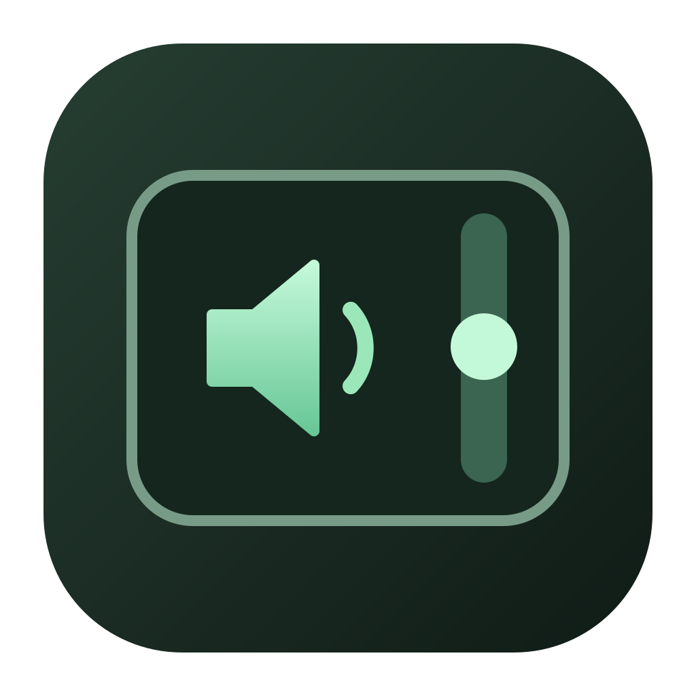

Pick your edge.
Left, right, or both. Choose the strip width and sensitivity that feel right for you.

EdgeVolumeA SMALL UTILITY FOR YOUR MAC
Your trackpad has an edge.
Give it a little more purpose.
Slide one finger up to turn it up.
Slide down to bring it back.
Free & open source · macOS 15+ · Early access
An interactive illustration. Your system volume stays unchanged.
LESS FUSS. MORE FLOW.
Left, right, or both. Choose the strip width and sensitivity that feel right for you.
Enable gestures, then start one finger inside the edge and move vertically. Lift to finish.
Close preferences and leave EdgeVolume running in the menu bar while you work.
MAKE YOURSELF AT HOME
Download. Drag into Applications. Open and enable gestures.
No Rust, Node.js, or developer tools needed.
Open the Apple menu → About This Mac. If you see “Chip” with an Apple M-series name, choose Apple Silicon. If you see “Processor” with Intel, choose Intel.
After attempting to open it, go to System Settings → Privacy & Security, find the EdgeVolume notice, and choose Open Anyway. Only do this for a download you trust. The early-access app is not notarized.
Windows development builds currently offer audio test buttons and trackpad diagnostics. Physical edge gestures are still in development.
Get the Windows development ZIP ↗GitHub sign-in required. This test artifact expires October 21, 2026. Find newer builds in the build history.
This is an experimental utility using a private macOS touch API. It observes touch input without suppressing cursor movement or macOS gestures. Compatibility and gesture reliability still need testing across more trackpads. Gestures start paused on each launch.
Small app. Open possibilities.
Help shape EdgeVolume on GitHub